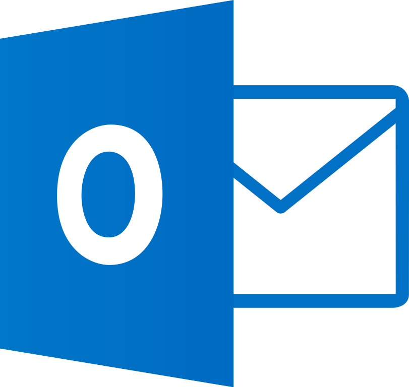

Word

Es el procesador de textos más usado, que permite crear, editar y formatear documentos de texto con diversas opciones y plantillas. Más info.
Exel
Es la hoja de cálculo más potente, que permite organizar, analizar y visualizar datos numéricos con fórmulas, funciones, gráficos y tablas dinámicas. Más info.
Power Point

Es la herramienta de presentación más versátil, que permite diseñar y mostrar diapositivas con texto, imágenes, animaciones, transiciones, vídeos y sonidos. Más info.
Acces

Es el sistema de gestión de bases de datos más sencillo, que permite crear, modificar y consultar bases de datos relacionales con tablas, consultas, formularios e informes. Más info.
Outlook
Es el gestor de correo electrónico y calendario más completo, que permite enviar y recibir mensajes, organizar citas, reuniones y tareas, y sincronizar contactos y cuentas. Más info.
One Note
Es el bloc de notas digital más práctico, que permite tomar notas, dibujar, insertar archivos y enlaces, y compartir y colaborar con otras personas. Más info.